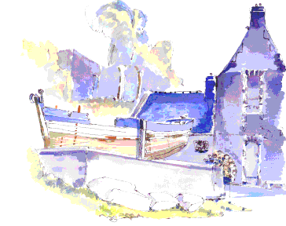

<div id="asso">
<b>
Association Tri Martolod</b>
<i>Restauration et utilisation d'anciens bateaux de travail en bois.</i></div>

<div class="citation">
<i>Sans
noeuds et sans bois fourchu, il y aurait plus de charpentiers. (prov. bretagne)</i>
</div>

<div class="mus">
<audio  controls="controls"  >
  <source src="http://trimartolod.free.fr/trimartolod.mp3" type="audio/mp3"> 
  <source src="http://trimartolod.free.fr/trimartolod.ogg" type="audio/ogg"> 
<!--- Pour les  navigateurs qui ne supportent pas html5 audio -->
<embed src="mus/trimartolod.mid" hidden="false" autostart="true" 
loop="false" width=50 height=15 controller="false" 
controls=smallconsole /><bgsound src="mus/trimartolod.mid" loop="once"/>
</audio>
</div>

<div class="une">
<center><h5><i>A la une :</i></h5></center>
{% for tag in site.iterable.tags %}
{% if tag.name == 'accueil' %}
<ul>
{% for post in tag.posts %}
<li>{{ post.date | date: "%d %b %Y " }}<a class="zoom" href="{{ site.baseurl }}{{post.url}}">&#x2767;&nbsp;{{ post.title }}</a></li>
{% endfor %}
</ul>
{% endif %}
{% endfor %}
</div>


<div>





</div>


<div id="post">
Les 7 derniers articles sur {{ site.posts | size }} ...
<hr/>
<ul>
  {% for post in site.posts limit: 7 %}
    <li>{{ post.date | date: "%d %b %Y " }} <a class="zoom" href="{{ post.url }}">&#x2767;&nbsp;{{ post.title }}</a></li>
  {% endfor %}

</ul>
</div>
<div class="powered">Mouliné par <a href="/tag/jekyll"> jekyll</a></div>

